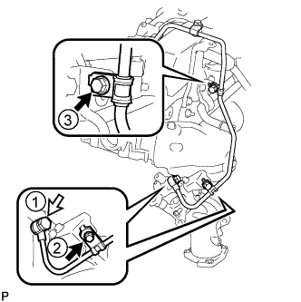
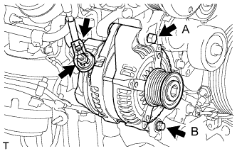
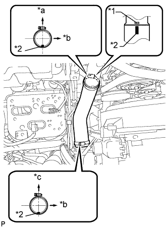
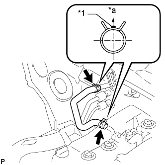
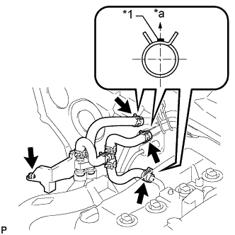
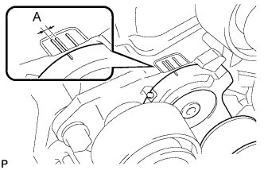

ВЫПУСКНОЙ КОЛЛЕКТОР С ТУРБОНАГНЕТАТЕЛЕМ (для моделей с DPF) > УСТАНОВКА |
| 1. УСТАНОВИТЕ ПАТРУБОК ОХЛАЖДАЮЩЕЙ ЖИДКОСТИ ТУРБИНЫ № 1 |
Установите патрубок охлаждающей жидкости турбины № 1 с новой прокладкой и закрепите его 2 гайками и болтом.
| 2. УСТАНОВИТЕ ВХОДНОЙ КОЛЕНЧАТЫЙ ПАТРУБОК КОМПРЕССОРА |
Закрепите новую прокладку и входной коленчатый патрубок компрессора 2 гайками.
| 3. УСТАНОВИТЕ ВЫПУСКНОЙ КОЛЛЕКТОР С ТУРБОНАГНЕТАТЕЛЕМ В СБОРЕ |
Временно закрепите новую прокладку и турбонагнетатель 3 новыми гайками.
Установите новую прокладку на двигатель и закрепите выпускной коллектор с турбонагнетателем и 8 плоских шайб 8 новыми гайками.
Временно закрепите трубку подвода масла к турбине.
Закрепите новую прокладку и трубку подвода масла к турбине 2 гайками, но не затягивайте гайки.
Закрепите новую прокладку и трубку подвода масла к турбине 2 болтами, но не затягивайте болты.
Закрепите новую прокладку и трубку подвода масла к турбине пустотелым соединительным болтом-штуцером, но не затягивайте его.

| *1 | Новая прокладка | *2 | Захват |
| *a | Широкая часть | *b | Узкая часть |
 | Наружу | - | - |
Временно закрепите опору турбонагнетателя 2 болтами и новой гайкой.
Затяните 3 гайки турбонагнетателя.
Затяните 2 гайки A.
Затяните пустотелый соединительный болт-штуцер B.
Затяните 2 болта C.
 |
Затяните 2 болта и гайку опоры турбонагнетателя в порядке, показанном на рисунке.
| 4. УСТАНОВИТЕ КРОНШТЕЙН ЗАЖИМА ЖГУТА ПРОВОДОВ |
Установите кронштейн зажима жгута проводов и закрепите его болтом.
| 5. ПОДСОЕДИНИТЕ ШЛАНГ ОХЛАЖДАЮЩЕЙ ЖИДКОСТИ ТУРБИНЫ № 3 |
Подсоедините шланг охлаждающей жидкости турбины № 3 к перепускному патрубку охлаждающей жидкости № 2.
| 6. ПОДСОЕДИНИТЕ ШЛАНГ ОХЛАЖДАЮЩЕЙ ЖИДКОСТИ ТУРБИНЫ № 1 |
Подсоедините шланг охлаждающей жидкости турбины № 1 к перепускному патрубку охлаждающей жидкости № 2.
| 7. ПОДСОЕДИНИТЕ ТРУБКУ ЩУПА ПРОВЕРКИ УРОВНЯ МОТОРНОГО МАСЛА |
Подсоедините трубку щупа проверки уровня моторного масла.
Вверните болт.
| 8. ВРЕМЕННО УСТАНОВИТЕ ТЕПЛОЗАЩИТНЫЙ ЭКРАН ВЫПУСКНОГО КОЛЛЕКТОРА № 1 |
Временно закрепите теплозащитный экран выпускного коллектора № 1 2 болтами.
| 9. УСТАНОВИТЕ ТЕПЛОЗАЩИТНЫЙ ЭКРАН ТУРБИНЫ № 1 |
Временно закрепите теплозащитный экран турбины № 1 2 болтами.
Затяните 2 болта теплозащитного экрана выпускного коллектора № 1 и 2 болта теплозащитного экрана турбины № 1.
| 10. УСТАНОВИТЕ ТРУБКУ ВЕНТИЛЯЦИИ КАРТЕРА |
Подсоедините 2 шланга вентиляции картера и закрепите трубку вентиляции картера болтом на крышке головки блока цилиндров.
| 11. УСТАНОВИТЕ ЗАЖИМ ТОПЛИВОПРОВОДА |
Закрепите зажим топливопровода болтом.
| 12. УСТАНОВИТЕ ВЫХОДНОЙ ПАТРУБОК ТУРБИНЫ |
Временно закрепите выходной патрубок турбины с новой прокладкой 3 новыми гайками.
Временно закрепите топливопровод № 1 с помощью 2 болтов.
Временно закрепите топливопровод № 1 с новой прокладкой с помощью пустотелого соединительного болта-штуцера.
 |
Затяните 3 гайки выходного патрубка турбины.
| *1 | Перепускной патрубок охлаждающей жидкости № 4 |
| *2 | Перепускной шланг охлаждающей жидкости № 12 |
| *3 | Выходной патрубок турбины |
| *4 | Новая прокладка |
| *5 | Топливопровод № 1 |
| *6 | Пустотелый соединительный болт-штуцер |
Подсоедините перепускной патрубок охлаждающей жидкости № 4 к перепускному шлангу охлаждающей жидкости № 12.
Установите новую прокладку и вверните пустотелый соединительный болт-штуцер в выходной патрубок турбины.
| 13. ПОДСОЕДИНИТЕ ТОПЛИВОПРОВОД № 1 |
|  |
Затяните болты и пустотелый соединительный болт-штуцер топливопровода № 1 в порядке, показанном на рисунке.
 | Пустотелый соединительный болт-штуцер |
| 14. УСТАНОВИТЕ ПЕРЕПУСКНОЙ ШЛАНГ ОХЛАЖДАЮЩЕЙ ЖИДКОСТИ № 11 |
Подсоедините перепускной шланг охлаждающей жидкости № 11.
Подсоедините разъем дополнительной форсунки подачи топлива в выпускную трубу.
| 15. УСТАНОВИТЕ ВЫХОДНОЙ ПАТРУБОК ТУРБИНЫ № 2 |
Закрепите новую прокладку и выходной патрубок турбины № 2 3 новыми гайками.
| 16. УСТАНОВИТЕ ОПОРУ ВЫХОДНОГО КОЛЕНЧАТОГО ПАТРУБКА ТУРБИНЫ |
Временно закрепите опору выходного коленчатого патрубка турбины с помощью 2 болтов.
 |
Затяните 2 болта опоры выходного коленчатого патрубка турбины в порядке, показанном на рисунке.
| 17. УСТАНОВИТЕ ТЕПЛОЗАЩИТНЫЙ ЭКРАН ВЫПУСКНОГО КОЛЛЕКТОРА № 2 |
Установите теплозащитный экран коллектора № 2 и закрепите его 2 болтами.
| 18. УСТАНОВИТЕ КРОНШТЕЙН КОМПРЕССОРА № 1 |
Закрепите кронштейн крепления компрессора № 1 5 болтами.
| 19. УСТАНОВИТЕ КРОНШТЕЙН ГЕНЕРАТОРА |
Закрепите кронштейн генератора болтом.
| 20. УСТАНОВИТЕ ГЕНЕРАТОР В СБОРЕ |
|  |
Установите генератор и закрепите его 2 болтами.
Подсоедините провод генератора и закрепите его гайкой.
Установите заглушку контакта.
Подсоедините разъем генератора.
| 21. ПОДСОЕДИНИТЕ КОМПРЕССОР СИСТЕМЫ КОНДИЦИОНИРОВАНИЯ В СБОРЕ (для моделей с системой кондиционирования) |
Подсоедините компрессор системы кондиционирования с помощью 4 болтов.
Подсоедините разъем компрессора.
| 22. УСТАНОВИТЕ КРОНШТЕЙН ВЯЗКОСТНОГО ПОДОГРЕВАТЕЛЯ № 1 В СБОРЕ (для автомобилей, предназначенных для эксплуатации в холодном климате) |
Закрепите кронштейн вязкостного подогревателя № 1 4 болтами.
| 23. УСТАНОВИТЕ ВЯЗКОСТНЫЙ ПОДОГРЕВАТЕЛЬ С ЭЛЕКТРОМАГНИТНОЙ МУФТОЙ В СБОРЕ (для автомобилей, предназначенных для эксплуатации в холодном климате) |
Установите вязкостный подогреватель с электромагнитной муфтой и закрепите его 2 болтами.
Подсоедините перепускной шланг охлаждающей жидкости и шланг охлаждающей жидкости.
Подсоедините разъем вязкостного подогревателя.
| 24. УСТАНОВИТЕ ВЫХОДНОЙ ПАТРУБОК КОМПРЕССОРА |
Закрепите выходной коленчатый патрубок компрессора 2 болтами и затяните зажим шланга.
Закрепите кронштейн жгута проводов болтом.
Установите 3 зажима жгута проводов.
| 25. УСТАНОВИТЕ ВОЗДУШНЫЙ ШЛАНГ № 1 |
|  |
Совместите метку, нанесенную краской на воздушный шланг № 1, с рельефной меткой на промежуточном охладителе и установите воздушный шланг № 1.
| *1 | Рельефная метка |
| *2 | Метка, нанесенная краской |
| *a | Задняя сторона автомобиля |
| *b | Левая сторона |
| *c | Верх |
Затяните 2 зажима.
| 26. УСТАНОВИТЕ ШЛАНГ ОТОПИТЕЛЯ (для моделей без задней системы кондиционирования) |
|  |
Установите шланг отопителя.
| *1 | Метка, нанесенная краской |
| *a | Верхняя сторона |
| 27. ПОДСОЕДИНИТЕ ШЛАНГ И ТРУБОПРОВОД ОТОПИТЕЛЯ (для моделей с задней системой кондиционирования) |
|  |
Заверните болт.
| *1 | Метка, нанесенная краской |
| *a | Верхняя сторона |
Подсоедините 3 шланга отопителя.
| 28. УСТАНОВИТЕ КОРПУС ВОЗДУШНОГО ФИЛЬТРА В СБОРЕ |
Установите корпус воздушного фильтра и закрепите его 3 болтами.
| 29. УСТАНОВИТЕ ФИЛЬТРУЮЩИЙ ЭЛЕМЕНТ ВОЗДУШНОГО ФИЛЬТРА В СБОРЕ |
| 30. УСТАНОВИТЕ КРЫШКУ ВОЗДУШНОГО ФИЛЬТРА В СБОРЕ |
Присоедините 4 зажима, чтобы закрепить крышку воздушного фильтра.
За исключением моделей, предназначенных для эксплуатации в холодном климате:
Подсоедините разъем датчика массового расхода воздуха и закрепите его 2 зажимами.
Для автомобилей, предназначенных для эксплуатации в холодном климате:
Подсоедините разъем датчика массового расхода воздуха и закрепите его 3 зажимами.
| 31. УСТАНОВИТЕ ШЛАНГ ВОЗДУШНОГО ФИЛЬТРА № 1 |
Установите шланг воздушного фильтра №1.

| *1 | Шланг воздушного фильтра № 1 | *2 | Входной коленчатый патрубок компрессора |
| *3 | Крышка воздушного фильтра | *4 | Выступы |
| *5 | Канавка | - | - |
| *a | Верхняя сторона | *b | Передняя сторона автомобиля |
Затяните 2 шланговых хомута.
| 32. УСТАНОВИТЕ ПОЛИКЛИНОВОЙ РЕМЕНЬ ВЕНТИЛЯТОРА И ГЕНЕРАТОРА |
Поверните шкив натяжителя по часовой стрелке с помощью установочного болта шкива, а затем установите поликлиновой ремень.

| *1 | Шкив коленчатого вала | *2 | Шкив вентилятора |
| *3 | Генератор | *4 | Опорный шкив № 2 |
| *5 | Опорный шкив № 3 | *6 | Компрессор системы кондиционирования |
| *7 | Вязкостный подогреватель | - | - |
| *a | Тип A | *b | Тип C |
| *c | Тип B | *d | Тип D |
|  |
Удостоверьтесь, что индикаторная метка натяжителя располагается в зоне A, как показано на рисунке.
| 33. УСТАНОВИТЕ ПЕРЕДНИЙ КРОНШТЕЙН ОТОПИТЕЛЯ (для автомобилей, предназначенных для эксплуатации в холодном климате) |
| 34. УСТАНОВИТЕ ВЕРХНЕЕ УПЛОТНЕНИЕ КРОНШТЕЙНА РАДИАТОРА |
Установите верхнее уплотнение кронштейна радиатора и закрепите его 13 фиксаторами.
| 35. УСТАНОВИТЕ УПЛОТНЕНИЕ № 1 МЕЖДУ ФАРТУКОМ ПРАВОГО ПЕРЕДНЕГО КРЫЛА И РАМОЙ |
Закрепите 4 фиксаторами уплотнение № 1 между фартуком правого переднего крыла и рамой.
| 36. УСТАНОВИТЕ УПЛОТНЕНИЕ ФАРТУКА ПРАВОГО ПЕРЕДНЕГО КРЫЛА |
Закрепите 5 фиксаторами заднее уплотнение фартука правого переднего крыла.
| 37. УСТАНОВИТЕ ПРИЕМНУЮ ТРУБУ В СБОРЕ |
| 38. ПОДСОЕДИНИТЕ ПРОВОД К ОТРИЦАТЕЛЬНОМУ ВЫВОДУ АККУМУЛЯТОРНОЙ БАТАРЕИ |
| 39. ДОБАВЬТЕ ОХЛАЖДАЮЩУЮ ЖИДКОСТЬ ДВИГАТЕЛЯ |
Затяните пробку сливного крана радиатора вручную.
Затяните пробку сливного крана блока цилиндров.
Заполните радиатор охлаждающей жидкостью с увеличенным сроком замены "Super Long Life Coolant (SLLC)" от компании Тойота, залив ее в трубопровод B расширительного бачка.
| Параметр / Устройство | Заданные условия | |
| для моделей с автоматической трансмиссией | Для моделей с задним подогревателем | 14,9 литра (15,7 кварты США, 13,1 английской кварты) |
| Для моделей без заднего подогревателя | 13,1 литра (13,8 кварты США, 11,5 английской кварты) | |
| для моделей с механической трансмиссией | Для моделей с задним подогревателем | 15,0 литра (15,8 кварты США, 13,2 английской кварты) |
| Для моделей без заднего подогревателя | 13,2 литра (13,9 кварты США, 11,6 английской кварты) | |
Несколько раз сожмите рукой входной и выходной патрубки радиатора № 1 и № 2, а затем проверьте уровень охлаждающей жидкости.
Если уровень охлаждающей жидкости опускается ниже линии В, долейте охлаждающую жидкость SLLC Toyota до линии В.
Установите пробку расширительного бачка радиатора.
Установите вентиляционную пробку с помощью гаечного ключа.
Выпустите воздух из системы охлаждения.
Прогревайте двигатель, пока не откроется термостат. Когда термостат откроется, несколько минут прокачивайте охлаждающую жидкость.
Поддерживайте частоту вращения коленчатого вала двигателя на уровне 2500-3000 об/мин.
Несколько раз сожмите рукой входной и выходной патрубки радиатора, чтобы удалить воздух.
Остановите двигатель и подождите, пока охлаждающая жидкость остынет до температуры окружающего воздуха.
Когда охлаждающая жидкость остынет, убедитесь, что она находится на уровне отметки FULL.
Если уровень охлаждающей жидкости ниже отметки FULL, долейте SLLC от компании Тойота до этой отметки.
| 40. УДАЛИТЕ ВОЗДУХ ИЗ ТОПЛИВНОЙ СИСТЕМЫ |
 |
С помощью ручного насоса, установленного на крышке топливного фильтра, удалите воздух из топливной системы. Продолжайте прокачку, пока сопротивление насоса при работе не возрастет.
Проверьте, запускается ли двигатель.
Если двигатель запускается, перейдите к следующему шагу.
Если запуск двигателя невозможен, прокачайте систему снова с помощью ручного насоса до повышения сопротивления насоса (см. процедуры выше). Затем запустите двигатель.
Выключите зажигание.
Подсоедините портативный диагностический прибор к DLC3.
Включите зажигание (IG) и портативный диагностический прибор.
Сбросьте коды DTC (Нажмите здесь).
Запустите двигатель.*1
 |
Войдите в следующие меню: Powertrain / Engine and ECT / Active Test / Test the Fuel Leak.*2
| *a | Для справки (испытание в режиме Active Test) |
Выполните следующее испытание 5 раз с интервалами включения/выключения 10 с: Active Test / Test the Fuel Leak.*3
После 5-го испытания в режиме Active Test дайте двигателю поработать на холостом ходу в течение не менее 3 мин.

Войдите в следующие меню: Powertrain / Engine and ECT / DTC.
Считайте текущие коды DTC.
Сбросьте коды DTC (Нажмите здесь).
Повторите операции с *1 по *3.
Войдите в следующие меню: Powertrain / Engine and ECT / DTC.
Считайте текущие коды DTC.
| 41. ПРОВЕРЬТЕ, НЕТ ЛИ УТЕЧЕК ОХЛАЖДАЮЩЕЙ ЖИДКОСТИ |
Заполните радиатор охлаждающей жидкостью и подсоедините приспособление для опрессовки системы охлаждения и проверки пробки радиатора.
Прогрейте двигатель.
С помощью приспособления для опрессовки системы охлаждения и проверки пробки радиатора увеличьте давление в радиаторе до 123 кПа (1,3 кгс/см2, 18 фунтов на кв. дюйм) и убедитесь, что давление не падает.
Если давление снижается, проверьте на наличие утечек шланги, радиатор и насос системы охлаждения. При отсутствии внешних утечек проверьте сердцевину нагревателя, блок цилиндров и головку.
| 42. ПРОВЕРЬТЕ, НЕТ ЛИ УТЕЧЕК МАСЛА |
Запустите двигатель. Убедитесь, что в узлах, в которых выполнялись работы, нет утечек масла.
| 43. ПРОВЕРЬТЕ, НЕТ ЛИ УТЕЧЕК ТОПЛИВА |
Выполните диагностику в режиме Active Test.
Подсоедините портативный диагностический прибор к DLC3.
Включите зажигание (IG).
Включите портативный диагностический прибор.
Войдите в следующие меню: Powertrain / Engine and ECT / Active Test.
Выполните диагностику в режиме Active Test.
| Дисплей портативного диагностического прибора | Испытываемое устройство | Диапазон регулирования | Замечание по диагностике |
| Test the Fuel Leak | Создание давления в топливной системе Common Rail для проверки наличия утечек топлива | Stop/Start (остановить/запустить) |
|
| 44. ПРОВЕРЬТЕ, НЕТ ЛИ УТЕЧЕК ОТРАБОТАВШИХ ГАЗОВ |
| 45. УСТАНОВИТЕ ЗАЩИТУ КАРТЕРА ДВИГАТЕЛЯ № 1 |
Установите защиту картера двигателя № 1 и закрепите ее 4 болтами.
| 46. УСТАНОВИТЕ НИЖНЮЮ ОБЛИЦОВКУ ПЕРЕДНЕГО БАМПЕРА |
Установите нижнюю накладку переднего бампера и закрепите ее фиксатором и 5 болтами.